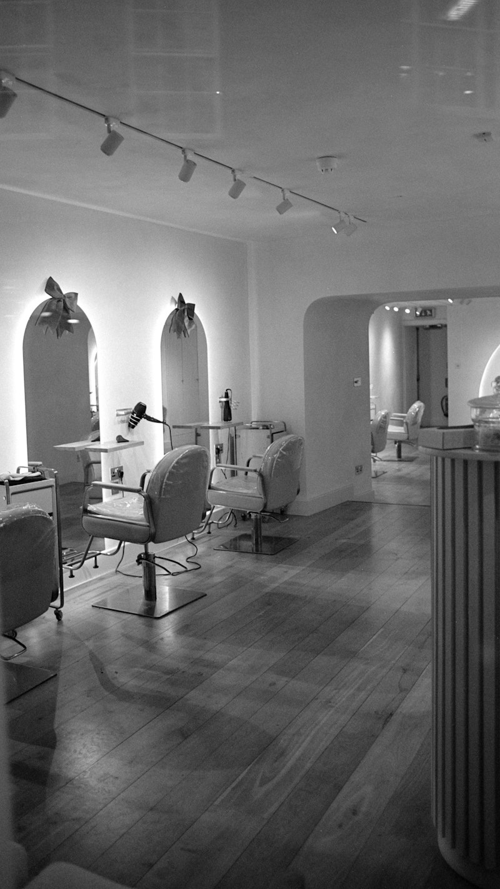
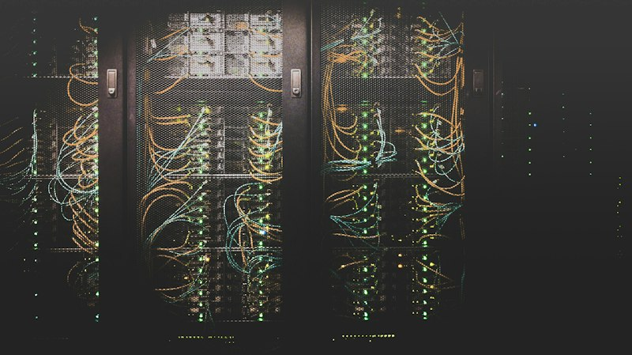
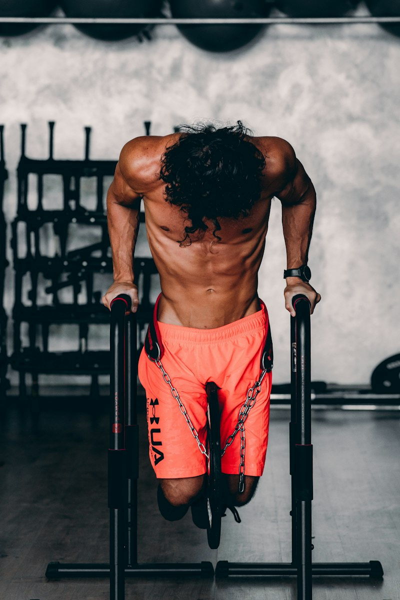
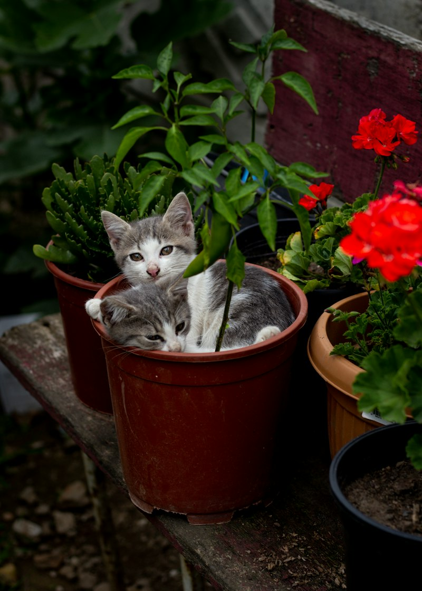

C# · MySQL
Beauty Salon Management
Aplicatie Windows Forms pentru clienti, specialisti, servicii si programari.
 Vizitate recent
Vizitate recent  Marcaje
Marcaje  Salvari rapide
Salvari rapide
Proiectele la care am lucrat si lucrurile care ma inspira in afara programarii.

Aplicatie Windows Forms pentru clienti, specialisti, servicii si programari.
Proiect C# pentru administrarea cladirilor, cu doua tipuri de baze de date.

API pentru angajati, cu autentificare JWT, autorizare si teste xUnit.
Inventar, divizori, tabla inmultirii, grafice de functii si aplicatii cu Timer.

Invat hiragana, katakana si kanji. Visul meu este o universitate japoneza.

Handstand, tractiuni, box si sprint – imi imbunatatesc timpul la 50 si 100 m.
Studio Ghibli, Danganronpa, muzica indie si cultura alternativa.

Gradinarit, lectura si design interior – plus o mare slabiciune pentru pisici.